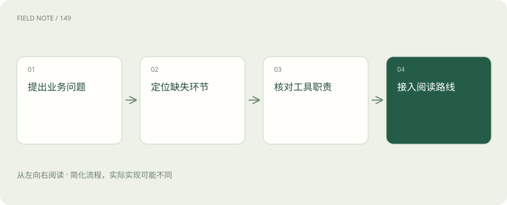

先说这篇在讲什么
假设公司要让员工向设备手册提问，你会很快遇到一串陌生工具名。它们有的读懂表格，有的找资料，有的运行模型，还有的负责检查回答。本章按这项工作的先后顺序整理新增教程，帮助你找到当前缺少的环节，也说明哪些项目还只是后续研究的线索。
先看一个具体例子
做设备问答时，先核对解析出的跨页表格，再确认提问和资料用了匹配的表示模型，接着用固定问题查答案与引用。只有实测发现服务太慢，才继续比较引擎和 GPU 管理平台。
遇到陌生概念，可以先读
展开前置阅读建议
打个比方，帮助理解
这是帮助理解的比方，实际过程以正文说明为准。
一图看懂

从设备手册问答找学习缺口
员工问“这台设备额定功率是多少”，系统却答错了。问题可能出在读表格、找段落或生成回答，不能看到新工具就以为缺了一整门学科。原书已经讲过查资料再回答的方法，也讲过训练和模型服务；这次补充的是这些环节中常见工具怎么配合。
本次以 ai_wiki 的一个固定提交为线索，检查了完整文件目录，再按主题选读笔记，最后核对项目官方资料。检查目录不等于逐字读完全部文件。已有 LangChain、LangGraph、vLLM、SGLang、LiteLLM、Neo4j、MCP、A2A、上下文和记忆章节继续保留，新教程接在相关原理之后。
先检查手册有没有被读错
假设跨页表格中，上一行是甲型号，下一行是乙型号。文字识别即使一个字没漏，也可能把乙型号功率放到甲型号下面。后面的搜索会找到这条错误资料，回答自然也错。先抽几份典型手册，检查标题、表格行列、阅读顺序和页码，再考虑换模型。
新增 MinerU、Docling 和 RAGFlow 就帮助理解这一步。前两者侧重让文档结构可以被程序使用，后者让人看到解析结果如何进入知识库应用，功能也可能重叠。验收时既要看能否上传 PDF，也要看回答能否准确指向原页，资料更新后旧内容是否处理妥当；上传成功只是开始。
再分清谁表示文字谁保存资料
员工换一种问法，系统仍应找到同一段说明。把文字转成可比较的数字表示的模型，通常叫 Embedding 模型；Sentence Transformers 和 BGE／FlagEmbedding 是这次学习入口。先找到一批可能相关段落，再重新评分挑顺序，叫重排，它与最初找候选是两步工作。
FAISS 和 Chroma 帮助理解资料怎么存、怎么找。FAISS 是向量检索库，Chroma 还提供集合与记录管理，应用自己要补的工作不同。若只换提问端的表示模型，却不重算资料的表示，即使数字长度相同，也可能无法比较。教程还连到 pgvector、Milvus、Qdrant，按数据量、更新频率和管理需要理解选择。
图解：一次检索应用需要不同层次的工具
需要训练时先看改变什么
手册问答不一定需要训练模型；如果确实要调整模型行为，就先检查训练材料、对话格式与导出结果。已有 Transformers、PEFT、TRL、PyTorch 章节介绍基础组件，新补的 LLaMA-Factory、Unsloth、MS-SWIFT 让你了解团队如何组织配置、数据和训练。具体支持哪些模型，要按版本核对，不能看到按钮就省略数据检查。
DeepSpeed 单独讲规模化计算，尤其是把训练过程中占用内存的内容分到不同设备。LoRA 则主要减少要训练的参数，两者能一起用，并非二选一。学完要能说明到底改了哪些数值参数，导出的附加参数还依赖哪个基础模型，以及瓶颈在显存还是设备间传数据，而不只是说“训练跑完了”。
运行模型与分配机器是两件事
手册越来越多、用户越来越多，才逐步遇到服务性能问题。已有 vLLM、SGLang 和 PD 分离内容，新补 TensorRT-LLM 用来比较另一种模型执行方案；GPUStack 帮助理解如何组织 GPU 资源和管理模型服务。执行模型的引擎、管理机器的平台和处理入口策略的网关可以配合，也可能覆盖部分相同工作。
平台支持多张显卡，不代表任意模型都能自动拆到多卡，也不代表每张卡都装得下一整个模型。先量清模型需要多少显存、预期同时有多少人使用，再判断组合方式。否则可能买到了更多卡，却没有解决实际限制。工具名称只能提供线索，资源需求和具体版本才决定是否适合。
让人能用还需要界面与服务
用 Gradio 或 Streamlit 做一个提问页面，适合快速展示效果；FastAPI 则帮助把能力做成别的程序能调用的服务。这些内容与已有 React、Vercel AI SDK 章节衔接。演示时一个人提问很顺利，不代表正式产品已经支持很多人各自处理资料。
正式使用还要考虑请求排队、长时间生成时如何显示进度、失败怎么提示、不同用户的记录如何隔开，以及任务中断后能否恢复。先做页面、再提供调用入口、再接入产品，可以逐步看到每一层增加了什么责任。一个漂亮聊天窗口不能替代后台资源管理，也不能自动解决用户权限问题。
拿相同问题比较结果才公平
两套系统一套只处理短问题，另一套读大量长文，直接比较速度没有意义。应固定问题、输入输出长度、同时请求数量，再记录成功率、等第一个字要多久、后续生成多快，并检查答案和引用是否正确。OpenCompass、EvalScope 的新增教程展示如何把这些比较保存为能再次运行的任务。
它们与 Ragas、DeepEval、lm-evaluation-harness 有交集，不能仅凭名字划定绝对用途。评分还可能受题目泄露进训练资料、提问格式不同、负责打分的模型偏好影响。公开榜单分数高也不能代替公司自己的验收：设备型号、表格和引用是否正确，仍要用实际问题检查。
图解：从线索走到可发布知识
把未完成的线索明确留在候选区
Agno、Parlant、CAMEL、MemOS、Cognee、EvoAgentX，以及语音识别、图神经网络和具身智能工具，是值得继续研究的方向，但不属于这次已经补入的九篇工具链教程。候选表示还有核验工作，不表示不重要，也不表示当前功能与版本已全部确认。EvoAgentX 旧地址发生跳转，需要继续找到当前仓库。
记忆工具要看写入、查找、冲突更新、用户隔离和删除；自改进工具要看改的是提示、流程还是模型参数，并检查新任务是否也变好。阅读顺序可先文档再检索，再按需要看部署、训练和评测。ai_wiki README 有 Apache 2.0 标识，但本次提交根目录未发现独立许可证文件，第三方文章也不能一并视为获授权，因此采用来源导读与原创重写，不整篇搬运文章、截图或代码包。
放在一起对比
| 缺口 | 此次补入的具体项目 | 对应阅读重点 |
|---|---|---|
| 文档接入 | MinerU、Docling、RAGFlow | 结构、出处与解析验收 |
| 表示与检索 | Sentence Transformers、BGE、FAISS、Chroma | 表示空间、重排与数据管理 |
| 模型训练 | LLaMA-Factory、Unsloth、MS-SWIFT、DeepSpeed | 工作台、训练组件与状态分摊 |
| 部署与交互 | TensorRT-LLM、GPUStack、FastAPI、Gradio、Streamlit | 引擎、平台、服务与界面 |
| 评测工作台 | OpenCompass、EvalScope | 能力、性能与可重复比较 |
读完先记住这一句
别踩这个误区
想一想
为什么不把资料库中的工具全都搬进教程？
先要确认职责、版本和来源。本次先补确认的空白，其他保留候选，核验清楚后再展开。
关联阅读
资料与边界
本文为原创知识讲解。类比和图示经过简化；示例数字不代表实测或报价。整理日期：2026-11-05。文末列出对应技术的原始资料，具体功能与版本支持请以原文为准。
按完整目录逐篇阅读